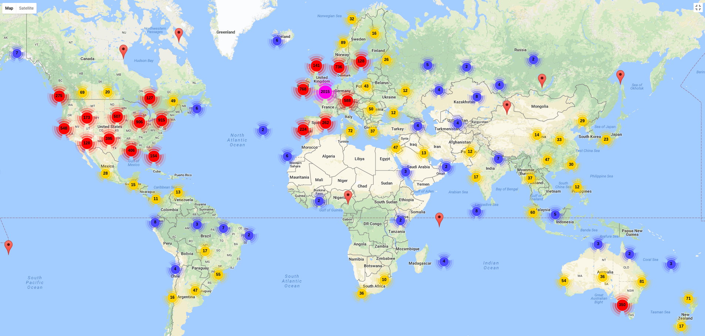
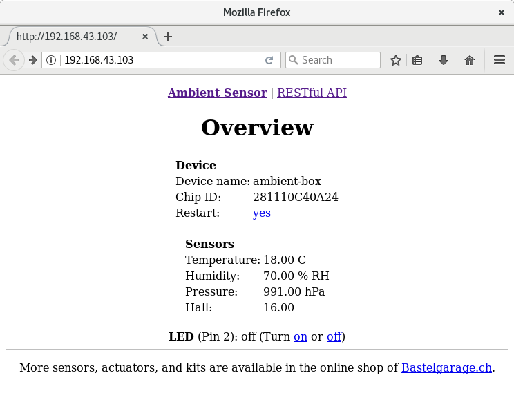
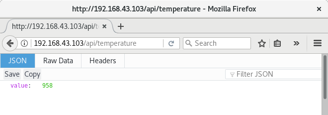

class: center, middle  # Home Assistant ### Fabian Affolter Maker Faire Zürich 2017 --- .header[] # Agenda 1. Einführung 2. Installation 3. Konfiguration --- # Über mich - B. Sc. CS BUAS, B. Sc. ME BUAS - [affolter engineering](http://affolter-engineering.ch/) - Home Assistant Developer - Fedora Security Lab/Fedora Security Lab Test bench - Fedora/EPEL Package Maintainer (ca. 190 packages) - Alpine Linux Contributor --- .header[] # Später für Fragen und ähnliches - **IRC**: faffolter (FreeNode) - **Mail**: mail@fabian-affolter.ch - **Jabber**: fab@swissjabber.org - **Web**: [http://fabian-affolter.ch](http://fabian-affolter.ch) - **Discord**: fabaff - **Twitter**: @fabaff --- .header[] # Internet of things .left-column[ - Lampen - Schalter - Thermostat - Wasserkocher - Zahnbürste - Kameras - Staubsauger ] .right-column[ - Waschmaschine - Bewässerung - Schlösser - Temperatur - Türen - Tierfütterung - ... ] --- .header[] # Protokolle & Busse - SOHO-Einsatz - Bluetooth, Bluetooth LE, IEEE 802.x, Z-Wave, X10, KNX, ZigBee, IR, LoRA, SCS, Universal Powerline Bus, Insteon, EnOcean, C-BUS, etc. -- - Industrieller Einsatz - CAN, Profibus, Modbus, Interbus, EtherCAT, ControlNet, SafetyBUS, BitBus, etc. --- .header[] # Problematik - Abhängigkeit von Hersteller - Insel-Lösungen - Cloud - Mobile App - Preis - etc. --- .header[] # Zusammenfassung - Viele Hersteller - Viele Protokolle - Wenig Interoperabilität --- .header[] # Do it yourself - Arduino - ESP8266, ESP32, und andere - GPIO - Raspberry Pi, Cubieboard, Beaglebone Black --- .header[] # Home Assistant - Python 3 - über 800 Integrationen - Apache 2.0 (früher MIT) - fast 4 Jahre alt (Erster Commit: 17. September 2013) - Validierung mit PEP8 / PyFlakes / PyLint - 94 % Test coverage (ohne Integrationen) - Release-Zyklus: alle zwei Wochen --- background-image: url(images/components.png) --- .header[] # Verfügbare Implementierungen - MQTT, Insteon, Modbus, RFXtrx, Z-Wave, ZigBee, SCSGate, KNX -- - RESTful API, `command_line`-* -- - Webservices .footnote[Component overview: https://home-assistant.io/components/#all] --- .header[] ## Wo?  --- .header[] # Betriebssysteme - Linux - Windows - macOS - *BSD --- .header[] # Vorbereitungen - Python - Virtual environment ! - Kompiler, Bibliotheken - ...abhängig von Betriebssystem --- .header[] # Optionen <img src="images/installation.png" alt="Home Assistant Installation" style="width:400px;"> .footnote[Installation overview: https://home-assistant.io/docs/installation/] --- .header[] # Installation ```bash $ pip3 install homeassistant ``` -- ## Alternativen - [Hass.io](https://home-assistant.io/hassio/) (All-in-one-Lösung) - [HASSbian](https://home-assistant.io/getting-started/installation-raspberry-pi-image/) (Image) - [Raspberry Pi All-In-One Installer](https://home-assistant.io/getting-started/installation-raspberry-pi-all-in-one/) (veraltet) - [Ansible Role](https://github.com/home-assistant/home-assistant-ansible) (forgeschritten) --- .header[] # Erzeugen von `configuration.yaml` - erster Start von Home Assistant - manuell - Script ```bash $ hass --script ensure_config ``` .footnote[Scripts: https://home-assistant.io/docs/tools/scripts/#existance-of-configuration] --- .header[] # Exkurs: Speicherort | Betriebssystem | Pfad | |:-------------- | ----:| | macOS | `~/.homeassistant` | | Linux | `~/.homeassistant` | | Windows | `%APPDATA%/.homeassistant` | .footnote[Configuring Home Assistant: https://home-assistant.io/docs/configuration/] --- .header[] # Initiale Konfiguration ```yaml homeassistant: name: Home latitude: 50.8333 longitude: 12.9167 elevation: 300 unit_system: metric time_zone: Europe/Berlin # Show links to resources in log and frontend introduction: # Enables the frontend frontend: ``` --- .header[] # Exkurs: Format `configuration.yaml` - YAML - Einrückungen - `key-value`-Paare (Format `key: value`) - Jede Collection / Liste startet mit einem `-` - Wenn doppelte Einträge, dann wird letzter genutzt - Linter ```bash $ hass --script check_config ``` .footnote[YAML: https://home-assistant.io/docs/configuration/yaml/] --- .header[] # Start ```bash $ hass $ hass --config path/to/config ``` -- ### Demo mode ```bash $ hass --demo-mode ``` -- ### Frontend öffnen ```bash $ hass --open-ui ``` --- .header[] # Ambient Sensor Kit - ESP32, Sensor, Breadboard, und Kabel - Simple, Outdoor, Deluxe - Webserver-, ThingSpeak-, RESTful API-, und MQTT-Unterstützung - Programmierbar durch Arduino IDE oder Micropython --- .header[] # Ambient Sensor Kit <img src="images/ambient-box.png" alt="Ambient Sensor Deluxe Edition" style="width:700px;"> --- .header[] # Ambient Sensor Kit - Web interface <center></center> --- .header[] # Ambient Sensor Kit - RESTful API - Endpunkte - Alle Werte: `/api/states` - Temperatur: `/api/temperature` - Luftfeuchtigkeit: `/api/humidity` - Luftdruck: `/api/pressure` - Hall: `/api/hall` - LED: `/api/led` --- .header[] # Ambient Sensor Kit - RESTful API ```bash $ curl http://192.168.0.209/api/temperature { "value": 21 } ``` Oder mit einem Browser  --- .header[] # `command_line`-Sensor ```yaml sensor: - platform: command_line name: Temperature command: curl http://192.168.0.209/api/temperature value_template: '{{ value_json.value }}' ``` -- # `rest`-Sensor ```yaml sensor: - platform: rest name: Humidity resource: http://192.168.0.209:5000/api/humidity value_template: '{{ value_json.value }}' ``` .footnote[Details: https://home-assistant.io/components/sensor.command_line/ & https://home-assistant.io/components/sensor.rest/] --- .header[] # Poll vs. Push - Abholen - Liefern lassen -- Konkret heisst dies: - REST API -> poll - MQTT -> push --- .header[] # MQTT - braucht einen Broker - Mosquitto - Home Assistant (HBMQTT) - mehr Konfiguration .left-column[ ```yaml # Embedded MQTT broker mqtt: ``` ] .right-column[ ```yaml # Other MQTT broker mqtt: broker: 127.0.0.1 ``` ] .footnote[Details: https://home-assistant.io/docs/mqtt/broker/] --- .header[] # MQTT Sensoren hinzufügen - Ein Topic pro Sensor - `ambient-box/humidity` - `ambient-box/temperature` - und andere - Für Umrechnungen `template`-Sensor ```yaml sensor: - platform: mqtt state_topic: "ambient-box/temperatur" name: "MQTT Temperatur" - platform: mqtt state_topic: "ambient-box/humidity" name: "MQTT Luftfeuchtigkeit" ``` --- .header[] # MQTT Switch hinzufügen - Ein Topic für Befehl - `ambient-box/led/set` - Ein Topic für Status - `ambient-box/led` ```yaml switch: - platform: mqtt command_topic: "ambient-box/led/set" state_topic: "ambient-box/led" name: "MQTT LED" ``` --- .header[] # Automation ```text Wenn ich nach Hause kommen - Auslöser (trigger) und es nach Sonnenuntergang ist - Bedingung (condition) schalte das Licht im Wohnzimmer an - Aktion (action) ``` --- .header[] - **Auslöser** - Event, welches die Regel ausführt - Status-Änderungen (z. B. `not_home` zu `home`) - **Bedingungen** - optionaler Test - Limitierung der Ausführung - wird gegen den aktuellen Zustand getestest - **Aktion** - Ausführung, wenn Regel is getriggert und Conditionen erfüllt - Service --- .header[] # Automation-Beispiel ```yaml automation: - alias: Check sensor value and show notification trigger: platform: numeric_state entity_id: sensor.mqtt_temperatur above: 20 action: service: persistent_notification.create data: message: "Es ist sehr heiss." ``` .footnote[Details: https://home-assistant.io/docs/automation/] --- class: middle .header[] - **Dokumentation**: <br/> [https://home-assistant.io/](https://home-assistant.io/) - **Community**: <br/> [https://community.home-assistant.io/](https://community.home-assistant.io/) - **Chat**: <br/> [https://discord.gg/c5DvZ4e](https://discord.gg/c5DvZ4e) --- class: center, middle # [https://home-assistant.io](https://home-assistant.io.org) --- .header[] # Teil 2 - Weitere relevante Informationen für die Konfiguration von Home Assistant. --- .header[] # Andere "Dinge" hinzufügen - Mögliche Stile: .left-column[ ```yaml sensor: - platform: mqtt state_topic: "home/2/temp" name: "MQTT Sensor 1" - platform: mqtt state_topic: "home/1/temp" name: "MQTT Sensor 2" - platform: moon switch: - platform: vera - platform: mystrom host: 10.100.0.104 name: MyStrom Switch ``` ] .right-column[ ```yaml sensor 1: platform: mqtt state_topic: "home/1/temp" name: "MQTT Sensor 1" sensor 2: platform: mqtt state_topic: "home/2/temp" name: "MQTT Sensor 2" camera 1: platform: generic camera 2: platform: mjpeg ``` ] --- .header[] # Aufteilen der Konfiguration - Auslagerung von Teilen - Kombinationen möglich ```yaml sensor: !include sensors.yaml ``` in `sensors.yaml` ```yaml - platform: vera - platform: mystrom host: 10.100.0.104 name: MyStrom Switch ``` .footnote[Splitting configuration: https://home-assistant.io/docs/configuration/splitting_configuration/] --- .header[] # Organisation `packages` In `configuration.yaml` ```yaml homeassistant: [...] packages: pack_1: !include workshop.yaml ``` in `workshop.yaml` ```yaml switch: - platform: rest - platform: mystrom sensor: - platform: random ``` --- .header[] # Auslagern von Secrets - keine API keys, Token und Passwörter in `configuration.yaml` - zentraler Speicherort - Unterstützung für Keyring .footnote[Storing secrets: https://home-assistant.io/docs/configuration/secrets/] --- .header[] # Auslagern von Secrets (2) `secrets.yaml` im Konfigurationsverzeichnis ```yaml do_api: 2adf28f0e90f13f309d12376cd ``` in `configuration.yaml` ```yaml digital_ocean: access_token: !secret do_api ``` --- .header[] # Remote access - IoT ist unsicher - Zugang von aussen - Tor/VPN --- .header[] # Gruppieren - Zusammenfassung von Elementen - `default_view:` für `HOME` - `view: yes` für Tab ```yaml group: default_view: view: yes entities: - group.kitchen - group.awesome_people - group.climate random: name: Random entities: - sensor.random1 - sensor.random2 ``` --- .header[] # Anpassen ```yaml customize: # Only the 'entity_id' is required. All other options are optional. - entity_id: sensor.living_room_motion hidden: true ``` --- .header[] # Datenbank - Standard ist SQLite - SQLAlchemy als Object Relational Mapper (ORM) - Unterstützung für MySQL, mariaDB und Postgresql ```yaml recorder: ``` - `purge_days: 5` --- .header[] # Web server - inklusive (`aiohttp`) - liefert Frontend ```yaml http: api_password: YOUR_PASSWORD ``` .footnote[HTTP component: https://home-assistant.io/components/http/] --- .header[] # Web server (2) - Support für SSL/TLS ```yaml http: ssl_certificate: /etc/letsencrypt/test/hass.example.com/fullchain.pem ssl_key: /etc/letsencrypt/test/hass.example.com/privkey.pem ``` - `server_host`, `server_port` - `trusted_networks` - `ip_ban_enabled`, `login_attempts_threshold` --- .header[] # Testen der Konfiguration ```bash $ hass --script check_config ``` --- .header[] # Schnittstellen für Anbindungen - Websocket API - RESTful API - Python API - Server-sent events